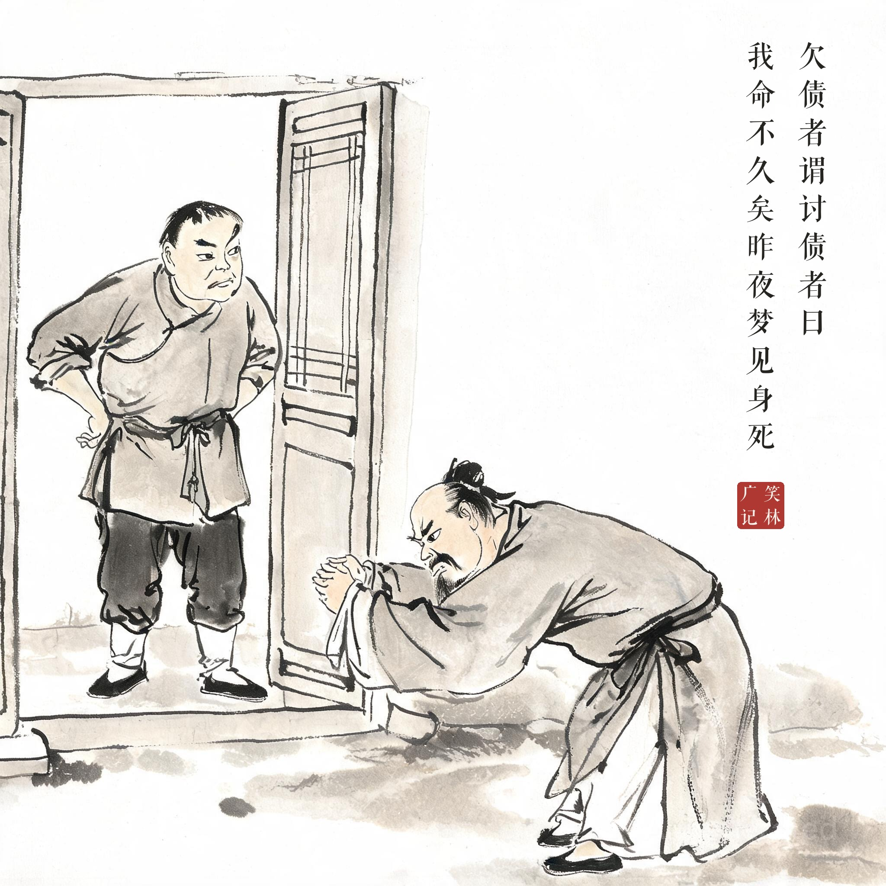
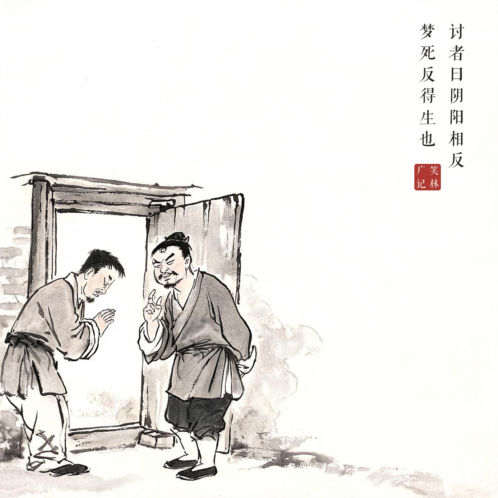
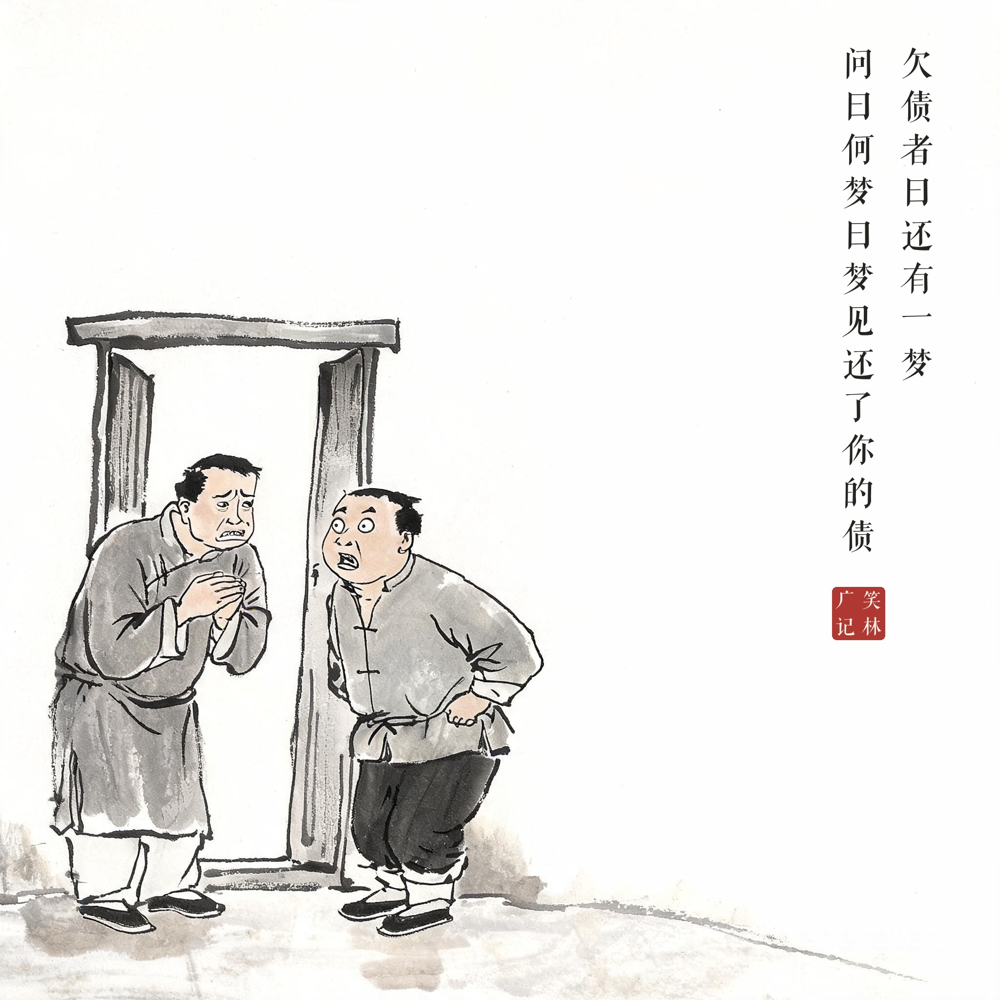

《笑林广记 · 贪窭部》（[清]游戏主人纂集）
欠债者谓讨债者曰："我命不久矣，昨夜梦见身死。"讨者曰："阴阳相反，梦死反得生也。"欠债者曰："还有一梦。"问曰："何梦？"曰："梦见还了你的债。"
欠债的人对讨债的说："我活不长了，昨晚梦见自己死了。"讨债的安慰他："阴阳是相反的，梦见死反而要活。"欠债的说："那我还做了一个梦。"讨债的问："梦见了什么？"欠债的说："梦见把你的债还清了。"
讨债人好心开解"梦死反得生"，欠债人顺势回敬"还梦见还了你的债"——照阴阳相反的道理，那个梦也永远不会成真。抬杠的尽头是赖账的艺术。